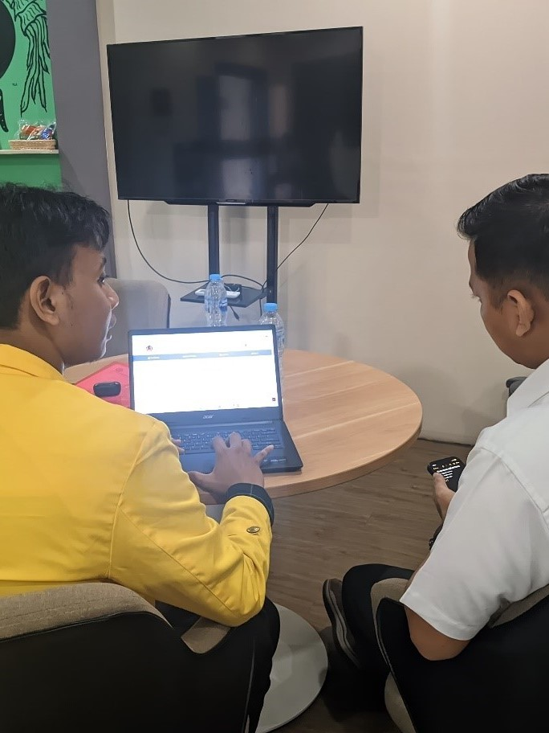
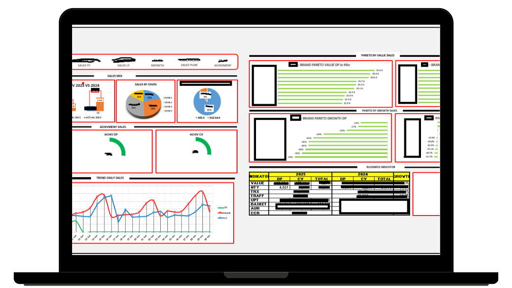
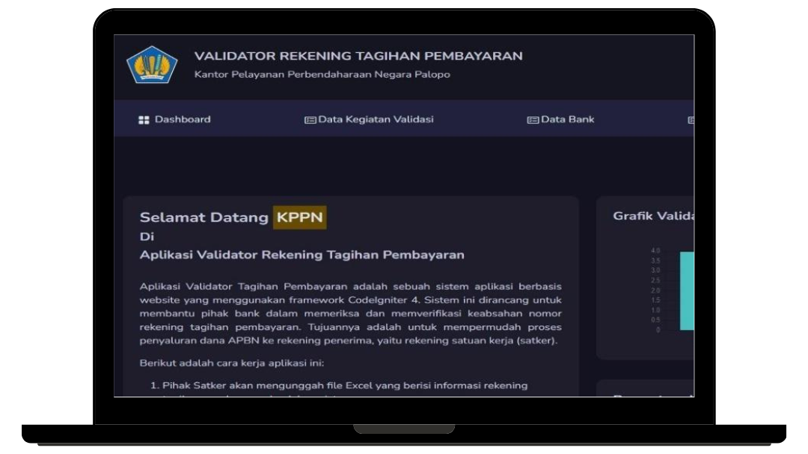

From Data to Dashboard
Muh. Khaifun, Analyst & Web Developer
Data Analyst
Transforming sales and stock data into clear, actionable insights to support faster and smarter decisions.
Web Developer
Developed and deployed 40+ custom web applications using PHP and CodeIgniter 4
IT Support
Solving IT issues on-site, minimizing downtime and ensuring operational continuity in dynamic retail environments.
About Me
Hi I'M Muh. Khaifun, S.Kom.
I am an Informatics graduate with a strong passion for data analysis and building efficient data-driven systems. With over 40 completed PHP–MySQL-based projects and a custom KPI dashboard that reduced reporting time by 60%, I bring solid technical expertise and strong business insight.
Experienced in workflow optimization, IT troubleshooting, and system supervision. Proficient in SQL, Excel, and Google Data Studio, with strong analytical thinking, adaptability, and the ability to collaborate.
Tools & Technical Skills: Excel (advanced formulas, pivot table), SQL, PHP–MySQL, Python, Google Data Studio, Power BI, Able to analyze large datasets, create interactive dashboards, and communicate insights through visualizations and reports.
Education:
- Universitas Cokroaminoto Palopo
- GPA : 3.91



Cerification
01
02
CyberOps Assocation| Universitas Indonesia
03
The Data Analyst Course: Complete Data Analyst Bootcamp | Udemy
Complete Data Analyst Training: Python, NumPy, Pandas, Data Collection, Preprocessing, Data Types, Data Visualization
Experience
Entry Data Processing
Matahari Department Store
Handled sales data analysis and report preparation to support management using Excel tools. Improved inventory accuracy with shrinkage checks and efficient reporting dashboards. Reduced POS downtime and ensured smooth store operations through IT troubleshooting and system coordination.
Web Application Developer
Freelance
Built 40+ PHP-MySQL web apps by analyzing client needs and designing efficient systems. Automated workflows to boost efficiency by 40% and reduce errors. Ensured on-time delivery through clear communication and progress tracking.
IT Developer & Finance Developer
Internship
Developed a fund verification app with automated checks and approvals, speeding up validation by 30%. Managed 1,000+ documents using a tagged classification system for better tracking. Improved accuracy with thorough analysis and reduced errors by 25% through structured checklists and alerts.